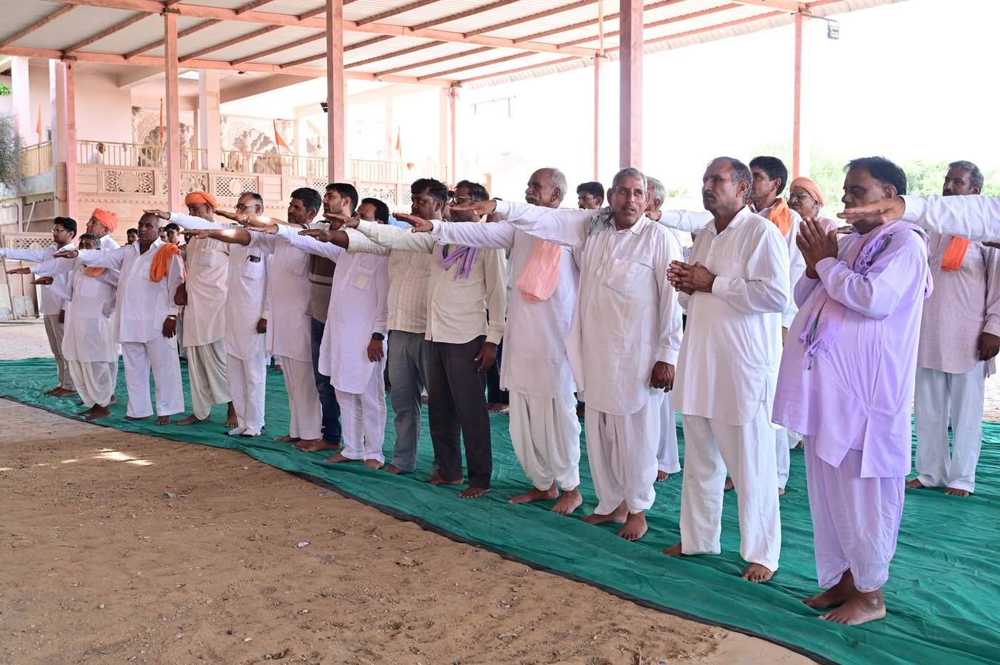
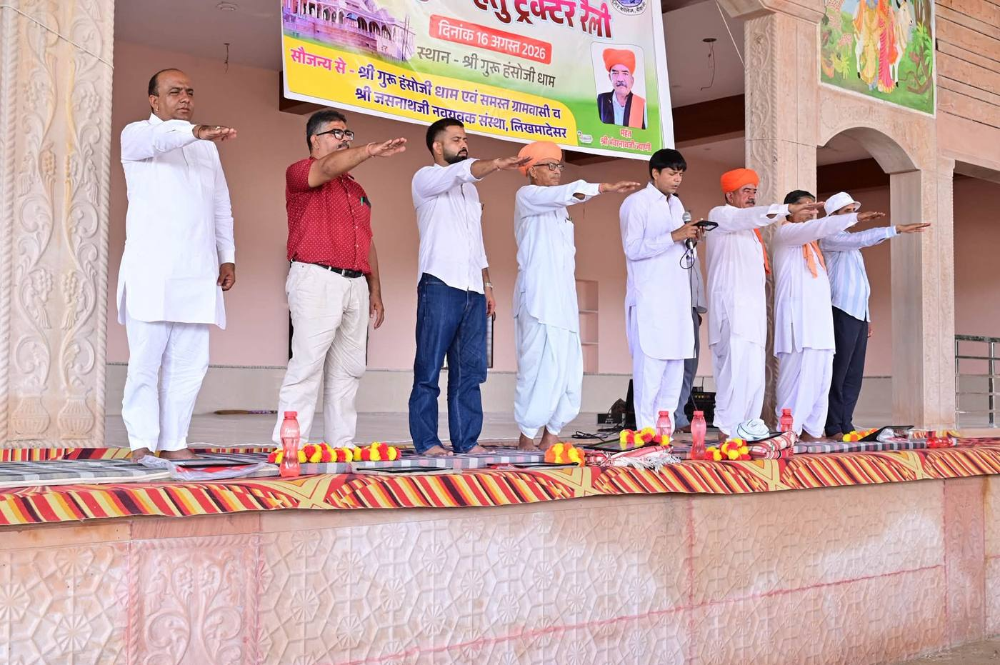

दो मिनट में जुड़ें
संकल्प लें
अपना संकल्प लेकर आज ही लोकसंकल्प से जुड़ें।
क्यों संकल्प?
परिवर्तन की शुरुआत स्वयं से होती है
सामाजिक परिवर्तन की शुरुआत व्यक्तिगत संकल्प से होती है। जब व्यक्ति बदलता है तो परिवार बदलता है, परिवार बदलता है तो समाज बदलता है।
संकल्प लेने में दो मिनट लगते हैं। इसमें कोई शुल्क नहीं है और किसी प्रमाण-पत्र या दस्तावेज़ की आवश्यकता नहीं है। आपको बस यह तय करना है कि आप नशे को अपने जीवन और अपने आयोजनों में जगह नहीं देंगे।
ध्यान रखें : “व्यक्ति नहीं, नशा समस्या है।” हम किसी को दोष नहीं देते। हम मिलकर उस सोच को बदलते हैं जो नशे को स्वीकार्य बनाती है।
एक संकल्प, चार असर
- आपका अपना जीवन स्वस्थ रहता है।
- घर के बच्चों को अच्छा उदाहरण मिलता है।
- गाँव के आयोजन नशामुक्त बनते हैं।
- आपके साथ और लोग जुड़ने का साहस करते हैं।
संकल्प पत्र
मैं यह पाँच बातें स्वीकार करता/करती हूँ
फ़ॉर्म भरने से पहले इन पाँच सूत्रों को एक बार धीरे-धीरे पढ़ लें।
- मैं स्वयं किसी भी प्रकार के नशे से दूर रहूँगा/रहूँगी।
- अपने परिवार एवं मित्रों को नशे से दूर रहने के लिए प्रेरित करूँगा/करूँगी।
- नशे की सामाजिक स्वीकृति का समर्थन नहीं करूँगा/करूँगी।
- अपने सामाजिक आयोजनों को नशामुक्त बनाने का प्रयास करूँगा/करूँगी।
- बच्चों एवं युवाओं के लिए सकारात्मक वातावरण तैयार करने में योगदान दूँगा/दूँगी।
मेरा संकल्प – मेरा योगदान – नशामुक्त समाज।
संकल्प फ़ॉर्म
अपना संकल्प दर्ज करें
केवल नाम और संकल्प की स्वीकृति आवश्यक है। बाकी जानकारी आप चाहें तो भरें।
डिजिटल प्रमाणपत्र
लोकसंकल्प प्रमाणपत्र
यह प्रमाणित किया जाता है कि
आपका नामने नशामुक्त समाज के निर्माण हेतु लोकसंकल्प लिया।
“नशे को नहीं, संस्कारों को सामाजिक स्वीकृति”
नशा मुक्त भारत अभियान के अंतर्गत
नई किरण नशा मुक्ति केंद्र, राजकीय डूंगर महाविद्यालय, बीकानेर द्वारा प्रदत्त
दिनांक आज
मैंने संकल्प लिया है। अब आपकी बारी।
इसे अपने परिवार और मित्रों के साथ साझा करें। एक संकल्प से दस संकल्प बनते हैं।

अगला कदम
संकल्प के बाद क्या?
संकल्प पहला कदम है। असली परिवर्तन तब दिखता है जब यह संकल्प गाँव और घर तक पहुँचता है।
ग्राम/वार्ड सभा में भाग लें
अपने गाँव में ग्राम/वार्ड लोकसंकल्प सभा आयोजित करें या उसमें शामिल हों। गाइड और सामग्री तैयार मिलेगी।
Good Parenting अपनाएँ
बच्चों को समय, संवाद और विश्वास दें। परिवार ही नशामुक्त पीढ़ी की पहली पाठशाला है।
अपनी कहानी साझा करें
आपके गाँव या परिवार में जो बदला, उसे लिखकर भेजें। आपकी कहानी किसी और की हिम्मत बन सकती है।
यदि आपको या आपके किसी अपने को नशा छोड़ने में सहायता चाहिए, तो सहायता केंद्र पर जाएँ। मदद माँगना कमजोरी नहीं, साहस है।